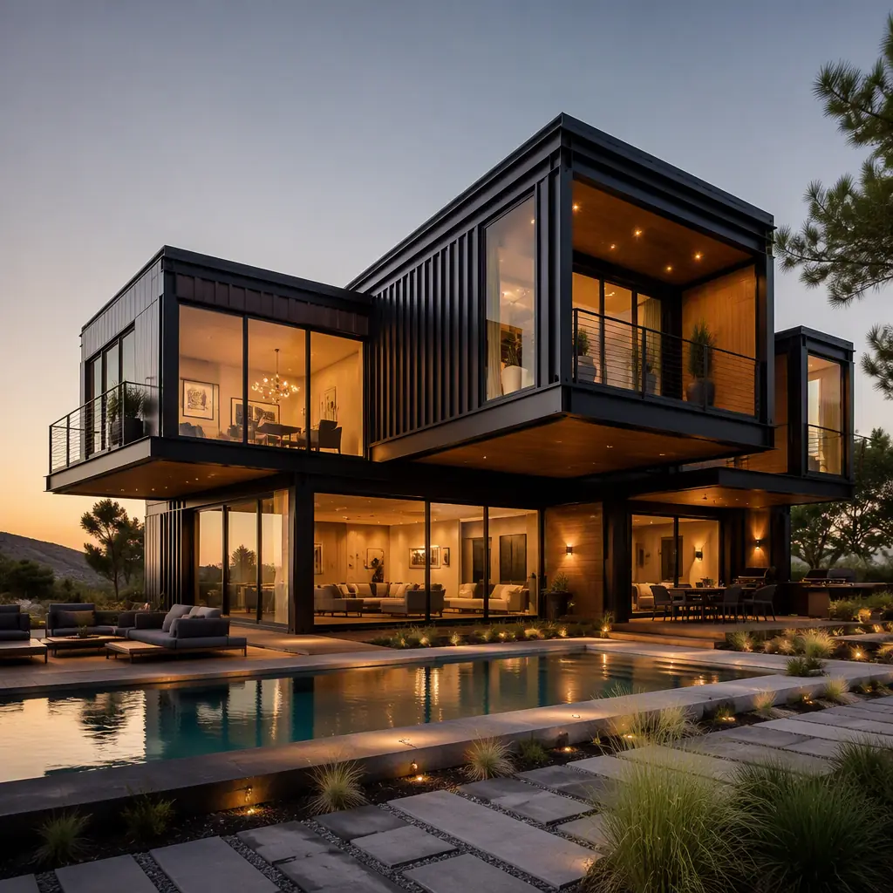
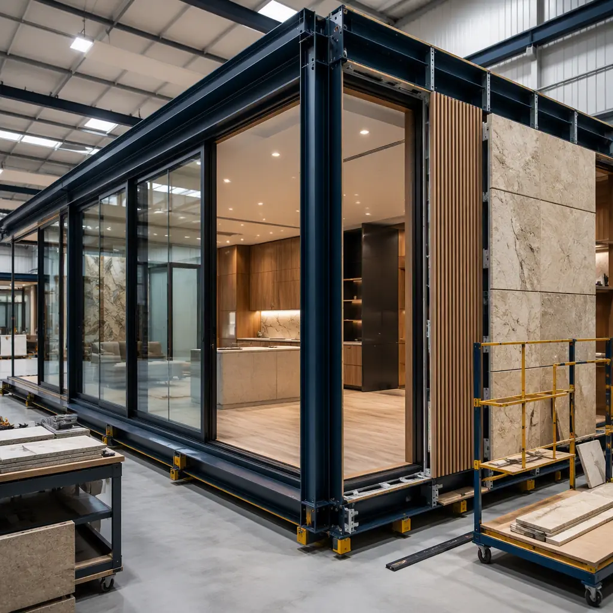
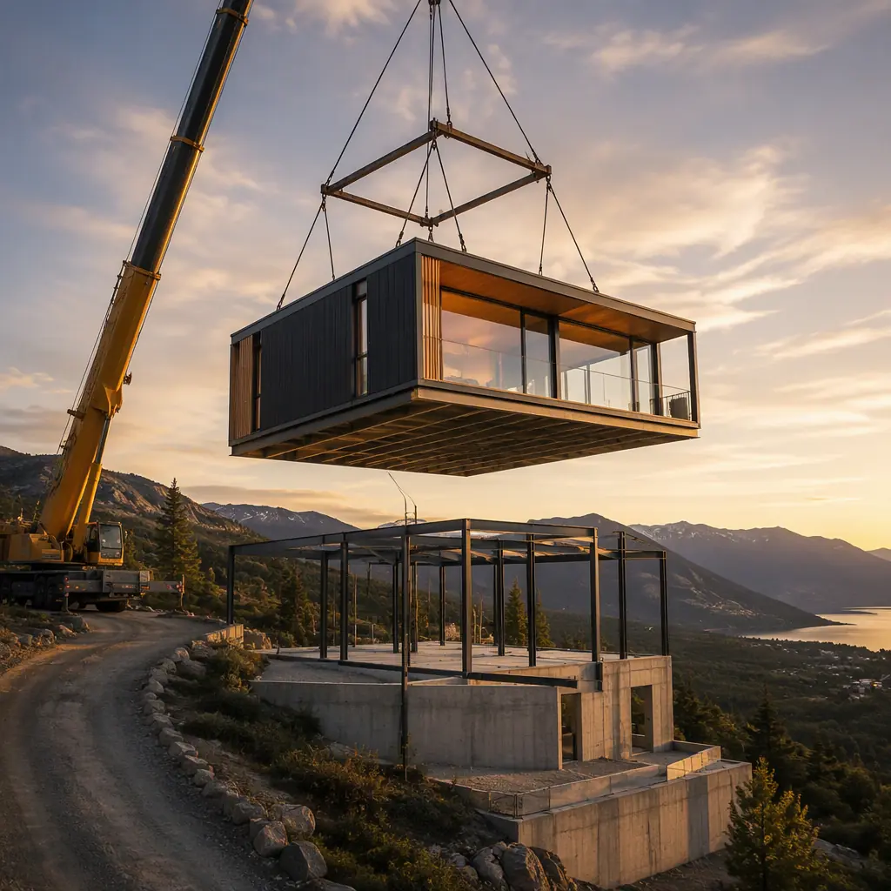
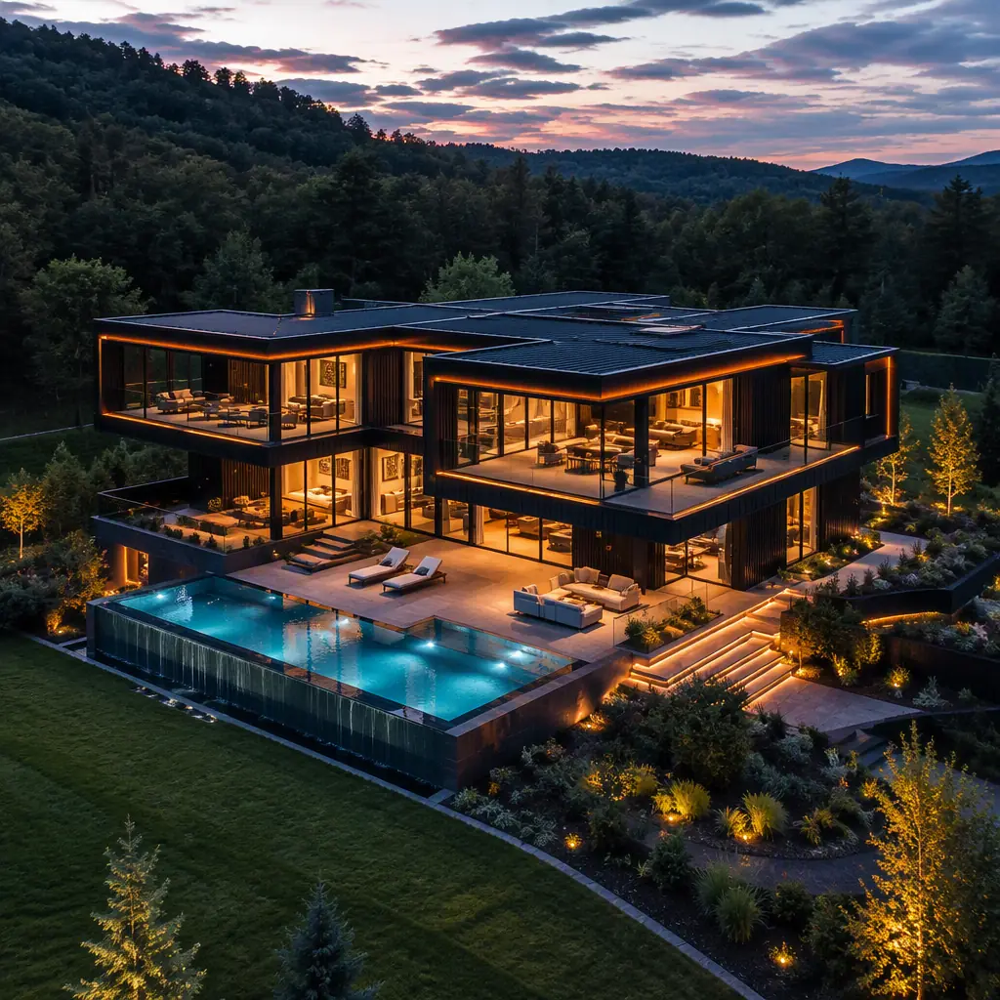

Luxury modular homes are the fastest-growing segment of the premium residential market, and it is not difficult to see why. A 4,000–8,000 sq ft architect-designed residence, built with factory precision, delivered in 6–9 months instead of 18–24, at $280–480 per sq ft against $400–700 per sq ft for comparable site-built custom homes — the value proposition is compelling for buyers who previously assumed that "modular" meant "temporary." The misconception is the last remaining barrier: luxury buyers and their architects now routinely specify factory-built steel-frame modules for residences with floor-to-ceiling glazing, European millwork, smart-home infrastructure, and structural spans that outperform stick-built construction. This guide explains what luxury modular homes actually are, how factory production achieves premium quality, what they cost, and the practical considerations for buyers, architects, and custom builders.

The Market: Why High-End Buyers Are Choosing Factory-Built
The luxury modular segment has matured from novelty to mainstream within a decade. Architect-designed modular residences now appear regularly in premium markets — the Hamptons, Aspen, Lake Tahoe, Napa, and coastal California — with completed homes featured in architectural publications and commanding premium resale values. The drivers are structural, not faddish:
- The skilled labor shortage. Custom site-built homes depend on scarce finish carpenters, stone masons, and millwork installers, and their availability determines the schedule. Factory production replaces that dependency with a trained, stable workforce.
- Schedule certainty. A luxury homebuyer who has already sold a previous residence cannot tolerate a 24-month build with weather delays. The modular schedule — factory production overlapping site work — is contractually fixed to the week.
- Precision at scale. The same factory tolerance that serves commercial projects — ±2 mm module dimensional accuracy — produces interior finishes that site-built homes rarely achieve: square corners, flush millwork, and window openings that are actually square.
- Energy performance. Factory-built envelope systems with controlled insulation installation achieve measured airtightness (0.6–1.5 ACH50) that field-built walls struggle to match, directly supporting the passive-house and net-zero specifications that luxury buyers increasingly demand. Our energy efficiency guide documents the envelope performance data.
For buyers evaluating the broader residential modular landscape, our developer guide to modular apartments covers the multi-family economics, while this article focuses on the single-family luxury custom residence.
What "Luxury" Means in a Factory-Built Home
Luxury is defined by the specification, not the construction method. A luxury modular home differs from a standard modular home in the same ways a custom site-built home differs from a tract home: larger modules, higher ceiling heights, premium glazing, and finish specifications that would be uneconomical in volume production.
The key differentiators in factory-built luxury residences:
| Feature | Standard Modular | Luxury Modular |
|---|---|---|
| Module size | 12–14 ft wide standard | Up to 16–18 ft wide, custom lengths with transport permitting |
| Ceiling height | 8–9 ft | 10–14 ft, vaulted and coffered ceiling systems |
| Glazing | Standard double-pane windows | Floor-to-ceiling fixed glazing, triple-glazed, thermally broken frames |
| Structure | Light-gauge steel or wood frame | Heavy steel frame, cantilevered sections, long clear spans up to 30+ ft |
| Finishes | Production-grade materials | European millwork, natural stone, designer fixtures, smart-home integration |
| Envelope | Code-minimum insulation | R-40+ walls, continuous air barrier, measured blower-door performance |
The heavy steel frame is the engineering foundation of the luxury module. It enables the open plans luxury buyers expect — a great room with a 30 ft clear span, a cantilevered second-story balcony, a window wall with no intermediate mullions — because the structure is engineered as a rigid steel box rather than a series of load-bearing stud walls. For the engineering detail behind factory-built steel structures, our steel modular construction buyer's guide explains the structural system in depth.
Design Freedom: From Modern Farmhouse to Glass Pavilion
The most persistent myth about modular homes is that they must look modular. In practice, the design constraint is not aesthetic but geometric: the home is composed of factory-produced modules that are joined on site, and the architecture exploits — rather than hides — that composition. Skilled modular architects design in module logic the way traditional architects design in structural bays: the module grid becomes the organizing rhythm of the floor plan, and the exterior cladding, roofline, and glazing are applied to express the design language of the buyer's choice.
Modern farmhouse, mid-century pavilion, contemporary glass box, mountain lodge — all are achievable. The design process is genuinely collaborative: the architect develops the design, the modular manufacturer engineers it for factory production, and the two iterate on module boundaries, MEP coordination, and transport constraints before any steel is cut. This is a different process from handing a set of drawings to a site contractor, and it is the reason buyers should engage the manufacturer early. Our custom modular specification guide walks through the commissioning process from concept to factory release, and our design customization guide covers the architectural options available in prefabricated construction.

The Craft Advantage: Factory Precision for High-End Finishes
Luxury finishes are unforgiving of imprecision. A marble backsplash cut to a wall that is out of square by 6 mm produces visible gaps. Crown molding meeting at a corner that is not plumb produces a visible step. These are the small failures that define the difference between a good custom home and a great one — and they are precisely where factory production excels.
In the factory, wall framing is assembled on jigs that guarantee squareness to ±2 mm. Drywall is applied, taped, and finished in a controlled environment at stable temperature and humidity — no shrinkage cracks from wet gypsum drying in cold weather. Paint is applied in spray booths with controlled film thickness. Millwork is installed with the casework manufactured to the module's measured dimensions rather than to nominal field dimensions. Stone and tile work is performed on level, rigid floors rather than on subfloors that will settle. The result is the fit-and-finish quality that site-built homes achieve only with exceptional (and expensive) supervision.
There is a second, less obvious craft advantage: rework is cheaper and faster in the factory. If a finish is rejected at final inspection, the correction happens at the production station with materials and tools at hand — not months later on a finished site with the trades reassembled. Factory quality systems track rework by station and by trade, which is why factory-built projects consistently report defect rates 50–80% below site-built equivalents. Our quality comparison analysis provides the defect-rate data, and our warranties guide explains the coverage structure buyers should expect.
Timeline: From Design to Move-In in 6–9 Months
For a luxury homebuyer, the schedule is often the decisive factor. A typical luxury modular project proceeds as follows:
- Months 0–2: Design and engineering. Architectural design, structural engineering, MEP coordination, permit drawings, and factory slot reservation.
- Months 2–3: Site work begins in parallel. Foundation (basement, crawl space, or slab), utilities, and site grading proceed while modules are in production.
- Months 3–7: Factory production. Modules are fabricated, finished, and inspected indoors. Premium finishes, glazing, and MEP systems are installed and tested.
- Months 7–8: Delivery and set. Modules are transported on permitted routes, craned into place, and joined. A 5,000–6,000 sq ft home typically sets in 3–5 days.
- Months 8–9: Site completion. Inter-module connections, roofing and cladding completion, interior seam finishing, landscaping, and final inspections.

Compare this with the 18–24 month custom site-built timeline, where each trade waits on the previous one and weather governs the critical path. The schedule compression is not achieved by cutting corners — it is achieved by moving 85–90% of the labor into the factory, where it runs in parallel with site work. Our project timeline analysis quantifies the schedule advantage across building types.
Cost Reality: Modular vs Site-Built Custom Luxury
The cost comparison for luxury homes is frequently misunderstood because buyers compare the wrong numbers. The relevant comparison is modular luxury versus site-built custom luxury — not modular versus production tract housing:
| Cost Component | Luxury Modular | Site-Built Custom |
|---|---|---|
| Construction cost per sq ft | $280–480 | $400–700 |
| Design and engineering fees | 8–12% of construction cost | 10–15% of construction cost |
| Site and foundation | Comparable (module delivery adds crane and transport) | Comparable |
| Carrying costs (interest, taxes, temp housing) | 6–9 months of exposure | 18–24 months of exposure |
| Change orders | Minimal — design frozen before fabrication | 5–15% of budget typical |
| All-in delivered cost (5,000 sq ft) | $1.9–2.8 million | $2.6–4.2 million |
For a 5,000 sq ft residence, the all-in savings typically range from $700,000 to $1.4 million — a difference that, for many buyers, is the difference between building and not building. The buyer should note that the modular price includes the same premium finishes; the savings come from production efficiency, schedule, and reduced waste, not from downgraded specifications. For the financial framework, our ROI analysis and cost per square foot guide provide detailed benchmarks.
Financing, Appraisal, and Resale Value
The two practical frictions in luxury modular ownership are construction financing and appraisal. Both are improving as the market matures, but buyers should plan for them.
Construction financing. Some lenders still apply manufactured-home lending rules to modular homes, but the correct classification for a factory-built permanent residence is site-built construction lending: the modules are delivered on permanent foundations and the home is titled as real property. Buyers should confirm the lender's modular policy before contracting; lenders familiar with modular construction typically offer standard construction loans with draw schedules aligned to factory milestones — our construction financing guide covers the loan structures and draw schedules.
Appraisal. Appraisers in some markets lack modular comparables and may default to conservative valuations. The mitigation is documentation: the buyer's appraisal package should include the manufacturer's engineering certification, the factory quality system credentials, energy performance test results, and comparable luxury home sales in the area. In mature modular markets, completed luxury modular homes appraise at parity with equivalent site-built homes — and in some cases above, where the energy performance and construction quality are documented. Our resale value analysis reviews the appreciation data for factory-built residential property.
The luxury modular home is not a compromise version of a custom home — it is a precision version. The buyer who specifies a site-built custom home is paying for craftsmanship that depends on the availability of scarce trades and the vigilance of a superintendent. The buyer who specifies a factory-built home is paying for craftsmanship that is engineered into a production system, verified at every station, and documented. In a market where schedule is measured in years and finish quality in millimeters, that is a different product — and it is winning.
Practical Steps for Buying a Luxury Modular Home
- Engage the manufacturer before the architect. The manufacturer's engineering constraints — module width, transport corridor, crane access — inform the design from day one and prevent costly redesigns.
- Verify the land early. Confirm road width, turning radii, overhead obstructions, and crane access for module delivery before closing on the site. Our transportation and logistics guide covers the delivery feasibility assessment.
- Lock the specification before fabrication. The design-freeze milestone is the point of no return for major changes; the buyer should be fully specified — fixtures, finishes, smart-home systems — before factory release.
- Inspect at the factory. A factory visit during production is the single best quality assurance tool a buyer has: walk the module, check the finishes, and see the quality system in operation.
- Structure the contract for milestones. A payment schedule tied to factory milestones (steel release, framing complete, finishes approved, delivery) protects both parties and keeps the project moving — our payment schedule guide explains the milestone structure.
For buyers comparing modular against the full range of premium building methods — including timber frame, CLT, and conventional custom — our modular vs wood-frame comparison and modular vs CLT comparison provide the method-level analysis.
